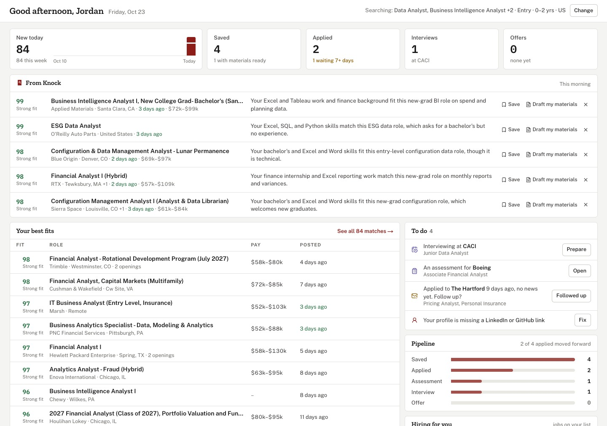

- Context
- Personal, solo
- Role
- Everything
- Status
- Live
- 800+
- career sites it checks
- 18
- kinds of job site it reads directly
- 77 ms
- to compare a profile with 100,000 postings
Knock
New jobs you qualify for, every morning
Knock reads your resume, checks more than 800 company and government career sites every six hours, and each morning shows you the new jobs you actually qualify for and why. For the ones you pick, it tailors your resume and cover letter, tells you who to reach out to and helps you prep for the interview. It's live at knockapply.com, with a public sample anyone can look at.

Where it came from
Knock grew out of my Job Search Agent, a local pipeline I ran for my own search. The rules that made that useful are code here: read the stated minimum, not the title; don't trust an aggregator's dates; never apply for anyone; never make anything up.
Where the jobs come from
Knock only reads jobs from the employer's own hiring system, never from the job boards that copy them. It started with Workday, Greenhouse, Ashby and Lever. Now there are 18 kinds of job site it can read, including Oracle, SuccessFactors and Taleo, Amazon's and Apple's own job sites, and government sites like USAJOBS, CalOpps and New York City's open data. Altogether that's more than 800 boards, checked every six hours. Going straight to the source means the dates are real, and a job that closes actually goes away.
I wanted it to be a polite crawler. It sends one request at a time to each site, with a short gap between them (ten seconds if the site's robots.txt asks for that), and it leaves a site alone when its robots.txt says no, which rules out Google and Meta. If a site asks visitors to prove they're human, Knock stops there and doesn't try to get around it.
Knowing when a job has closed is trickier than it sounds. Feeds glitch sometimes, so a posting that drops out of a full listing only counts as closed if it's still missing from another one at least 20 minutes later. Workday needed its own approach. A Workday posting's public page keeps answering 200 with the old details after a job closes, so Knock reads the JSON the site's own pages load, which answers 403 or 404 once a job is gone. The posted date comes from the company's system, and Knock records when it first saw each posting, so a repost doesn't pass for new.
Reading what a posting requires
Most postings never need a close read. Claude Haiku only reads a posting when it fits something someone is searching for, and each one gets read once for everybody. A read costs about $0.0006, and when 25 or more pile up they go through the Message Batches API at half price. Each read pulls out the minimum years, the minimum degree, licenses you'd need to already hold, clearance, citizenship, sponsorship, pay, workplace, and the required and preferred skills.
Only what's required counts against you, so "Master's preferred" on a Bachelor's minimum is just a note. And it goes by the body text: a "New Grad" title can still require a Master's. Until Claude has read a posting, regular-expression rules stand in, and the page says so.
Before switching models, I run an eval that reads the same real postings with both and compares the fields matching depends on. It tells me what it'll cost first and doesn't spend anything until I say so.

Matching
There's no Claude in matching. It's rules, Postgres full-text search and a small model running on Knock's own server, so rematching everyone takes seconds and costs nothing.
It matches on the work more than the title. Titles are loose on purpose, so a systems architect also sees network, cloud and plain Senior Architect jobs. What sets the order is how much of the job is yours: how many of its required skills your profile shows, even under another name (K8s counts as Kubernetes), how many of your keywords it uses, and how close it is in meaning to what you've done. A job that only shares words with your title gets left out. There are 132 job titles to pick from across 14 fields, from software and finance to healthcare and the trades, and you can type in any other.
Then there are four tiers. Strong fit means no experience minimum, or new grads welcome. Fits means you meet the stated minimum. Stretch is up to a year short, or a degree that equivalent experience can replace. Reach is more than a year short, or a required degree or license you don't hold. Experience comes from the dates on your resume. Internships count fully toward a 0 to 1 year minimum and a quarter as much toward longer ones, and part-time work counts half. A clearance you don't hold, citizenship you don't have, or no sponsorship when you need it leaves the posting out entirely.
If you end up with fewer than five matches, Knock tells you why in plain English, like "117 were posted more than 14 days ago," with a button that fixes it.
Matching on meaning
Keywords only get you so far. Someone who's done packet processing should see datapath jobs, and a networking architect shouldn't get an "Enterprise Architect" job for ERP systems just because the titles match. Knock also compares what a posting and a profile actually mean, using all-MiniLM-L6-v2, a small open embedding model. It runs on Knock's own machine as an 8-bit ONNX file, 23 MB, so it's free.
Each posting becomes 384 numbers, and so do your whole profile and each of your two latest jobs. Raw similarity doesn't compare well from one person to the next, since some profiles land close to everything. So a posting only counts as close if it clears a fixed bar and is also in the closest tenth of every open posting for you.
I didn't set up a vector database. The index is a few hundred thousand postings at most, and comparing one person against every open posting is a single matrix multiply over a float16 copy in memory, about 77 MB per 100,000 postings. That takes 77 ms for 100,000 on one CPU, and the answer is exact. The vectors live in Postgres with everything else, so backups and account deletion already cover them. If the index ever passes about a million open postings, pgvector is the next step.
The same vectors run More like this on every job. It takes the 150 closest open postings, keeps the 12 most alike with no more than four from one company, and comes back in about a tenth of a second.
Tailored materials that stay true
When you pick a job, Claude Sonnet tailors your resume, a cover letter and a short note to it. It's only allowed to pick, reorder and reword what's already in your profile, and every resume line has to cite the bullets it came from.
Then a check runs before anything is saved. A bullet with a number that isn't in its source goes back to your original. Skills you never listed get dropped. Numbers in the letter or the note that don't appear anywhere in your profile or the posting get flagged for you to look at. Every change is listed next to the materials, and Compare with your resume puts the tailored resume beside yours and shows where each line came from.
The files look like your resume. They keep your section names, their order and your links, in one of two styles: the usual LaTeX resume, or the classic layout from the Job Search Agent. Either one downloads as a PDF or a Word file. If you want it on one page, it tightens the spacing first, then the type (never below 9.5 pt), then the margins, and it won't drop a line to make it fit.
Each job also suggests who to reach out to: anyone the posting names, plus up to five LinkedIn searches built from the company, city, team and level. Knock never reads LinkedIn itself or buys contact data, and it never applies or messages anyone for you.
Interview prep and Ask Knock
When you mark a job as Interviewing, Claude Sonnet writes you a prep sheet. It covers what the posting cares about most and 6 to 8 questions you'll likely get, each with the story from your own experience that answers it. Each story says where on your profile it came from, and any number that isn't on your profile gets flagged. Tech roles also get LeetCode problems for the job's stack and level and a few system design prompts based on the actual work. The LeetCode ones link to LeetCode's own search, since a guessed link to a specific problem could easily be wrong. And the prompt doesn't let it pass any of them off as questions the company asks.
What the company actually asks comes from a separate lookup. Claude Sonnet searches the web, six searches and two page reads at most, with Glassdoor, LinkedIn and Indeed blocked in the tool itself. It writes up the rounds and the questions people say they got, with a source and a date on each. Web search's citations don't work with structured output, so Claude Haiku turns the write-up into a fixed format afterward. A lookup costs 15 to 25 cents, and for 30 days anyone else interviewing there for the same kind of role gets the same one.
Ask Knock is a chat about your own search. It's Claude Haiku with tools that read your profile, matches, tracker and any job, and it's told to stick to what they return. It can't change anything on its own. When it suggests something, like saving a job or changing your search, it shows up as a card, and nothing happens until you hit Do it. A confirmed card only runs once, even if you click twice or have it open in another tab. A question costs about a tenth of a cent.
Every morning
At 7am Eastern, after a fresh check of every site at 6, you get an email. It starts with Knock's picks, up to five of your best new matches, each with a line from Claude Haiku on why it fits. Haiku writes that line from a short summary of your profile and the posting, and it's told to use nothing else. After that come the rest of your new matches and any saved job that closed. If there's nothing new, there's no email.
The same run sets up reminders: a saved job closing within a week, an interview in the next two days, or a follow-up once a week has gone by since you applied with no news, with a short note drafted for you to send. All of it shows up on Today, the page you land on when you sign in.
Getting everyone exactly one email took a second try. Each email now goes out with its own idempotency key, and only a retry of a send that never got an answer reuses it, so a slow send can't go out twice. My first version built the key from the person and the date, which meant a later email that day could get marked as sent when nothing went out.

Running it
A worker process next to the site does the background work. Every six hours it checks every board, reads the new postings and rematches everyone. It used to run as threads inside the site's own process, and that starved the site: health checks failed in the middle of a cycle and a rematch could take minutes. Now the worker runs at a lower priority and picks up jobs from a queue, so a save comes back in tens of milliseconds and a rematch takes a few seconds, even mid-cycle.
Every Claude call is logged with what it cost, under daily limits I can change from the admin page while it's running: $3 a day across everyone, 75 cents a person, and a cap for each feature. If the API key stops working, Claude pauses for 30 minutes and the rules take over, so the rest of the site keeps going. Sign-in is through Clerk, with email codes or Google.
It all runs on one 2 GB Fly.io machine plus a small Postgres, for about $21 a month, with the site on Vercel. I sized the memory from measurements. On 1 GB the machine sat about 20 MB from full, and when the site loaded a new title index during a cycle it started swapping and froze for 34 seconds.
Limits
LinkedIn and Indeed don't let other sites read their postings, and some big employers like Google and Meta don't either, so a posting from any of them has to be pasted in, by its company link or its text. Nine of the readers use what a career site's own pages load, or what it publishes for search engines. That's public, but it isn't an official API, so a change on their side would need a fix on mine. A board that keeps failing gets switched off and shows up on the admin page, so I know when one breaks.
Stack Python and FastAPI · Postgres with full-text search, through SQLAlchemy · all-MiniLM-L6-v2 on ONNX Runtime, with NumPy · Claude Haiku 5.5 and Sonnet 5.5 through the Anthropic API, with Message Batches and web search · APScheduler, with a separate worker process · ReportLab and python-docx for the PDF and Word files · Next.js 16, React 19, Tailwind 4 and TanStack Query · Clerk sign-in · Resend · Fly.io and Vercel
Live demo knockapply.com The sample is open to anyone and runs on postings open today. The source is private; email me to see it.